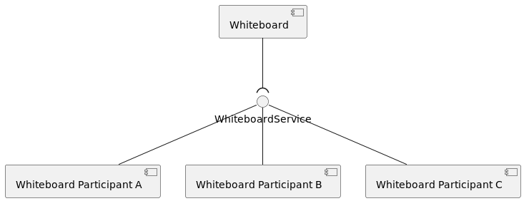
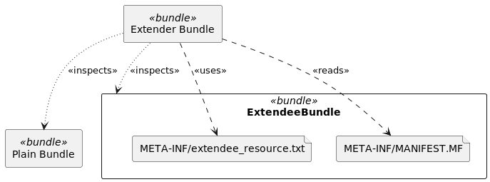
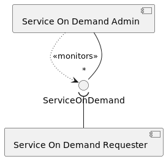

There are several design patterns used in Apache Celix and OSGi.
The whiteboard pattern is a pattern where the act of registering a service is enough to participate in or extend
an existing functionality.
A typical aspect of the whiteboard pattern is that an application should
still resolve and startup even if the bundle or bundles that pick up the whiteboard pattern services are absent.

Many Apache Celix services are whiteboard services. For example:
celix_shell_command_t and celix::IShellCommand services. These services can be
picked up by the Celix::shell bundle, but applications should still work if there is no Celix::shell installed
and started. celix_http_service_t and celix_websocket_service_t services. These services can be picked up by the
Celix::http_admin bundle to provide http url endpoints or websocket url endpoints. celix_log_sink_t services. If there is no Celix::log_admin bundle installed and started, the log sinks
services will never be called, but the application should still work. Note that the Celix::log_admin bundle
also uses a service on demand pattern (see below). service.exported.interface=*). These services will work fine
but only as local services - if there are no remote service bundles installed and started.For modularity, the whiteboard pattern is a nice fit, because a whiteboard service admin does not need to know how many - if any - whiteboard services are going to be provided and how the implementation details work (as long as the implementation adheres to the service contract).
Whiteboard pattern services are always consumer types, although for Apache Celix interfaces cannot be annotated as consumer or provider type.
One of the downsides of the whiteboard pattern is that it is not always clear why an application is not working as expected or what is missing to get the application working as expected. This is because it is not an error if there are unused services, and as result there is no error to help a user to identify what is missing.
For example: A log_collector bundle which provides a celix_log_sink_t service is installed and started,
so that logging can be collected at in a central log database.
But no logging is added to the central log database. Initially it could seem that the log_collector bundle
does not work, especially because the application will not print any warnings or errors.
But if the Celix::log_admin bundle is not installed and started, the log_collector bundle provided
celix_log_sink_t service will never be called, so installing and starting the Celix::log_admin is the issue
in this example.
The extender pattern is a design pattern which leverages the concept of resource containing bundles. With the extender pattern, functionality of an extender bundle can be extended by installing so called extendee bundles. The extendee bundles contain certain resources files and/or bundle manifest entries which are used by the extender bundle.

An example of the extender pattern is the Celix::http_admin bundle. The extender bundle Celix::http_admin
monitors installed bundles and reads bundle MANIFEST.MF entries for a X-Web-Resource entry.
If a X-Web-Resource entry is found, its value is used to set up new HTTP endpoint in the HTTP server of
the Celix::http_admin bundle using the static web resources of the extendee bundle.
Celix::http_admin Extendee Bundle ExampleThe following example shows how a very simple Celix::http_admin extendee bundle, which provided a minimal
hello world index.html page for the Celix::http_admin to pick up.
Remarks for the Celix::http_admin extendee bundle example:
Celix::http_admin.index.html file in CMakeindex.html file to the http_admin_extendee_bundle bundle in the bundle directory resources.X-Web-Resource bundle manifest entry, which marks the bundle as an extendee bundle for the
Celix::http_admin bundle. See Celix::http_admin for more info. Note that $<SEMICOLON> is used,
because a literal ; has a special meaning in CMake.Celix::http_admin (extender) bundle and the
http_admin_extendee_bundle (extendee) bundle.#CMakeLists.txt
add_celix_bundle(http_admin_extendee_bundle # <----------------------------------------------------------------------<1>
VERSION 1.0.0
NO_ACTIVATOR # <-------------------------------------------------------------------------------------------------<2>
)
file(WRITE "${CMAKE_CURRENT_BINARY_DIR}/index.html" "<html><body>Hello World</body></html>") # <---------------------<3>
celix_bundle_files(http_admin_extendee_bundle "${CMAKE_CURRENT_BINARY_DIR}/index.html" DESTINATION resources) # <----<4>
celix_bundle_headers(http_admin_extendee_bundle "X-Web-Resource: /hello$<SEMICOLON>/resources") # <------------------<5>
add_celix_container(extender_pattern_example_container # <-----------------------------------------------------------<6>
BUNDLES
Celix::http_admin
http_admin_extendee_bundle
)
When the extender_pattern_example_container executable is running the web address http://localhost:8080/hello
should show the content of the index.html
A less known Apache Celix / OSGi pattern is the service on demand (SOD) pattern. With the SOD pattern, services are ad hoc registered at the moment they are requested.
Where the whiteboard pattern can be used to extend functionality in modular and service oriented fashion, the SOD pattern can be used to use to provide more functional cohesive services to users in a service oriented fashion.
For the SOD pattern, the service filter to request services can be used to extract information about if and how a service on demand needs to be created.

Some Apache Celix bundles use the SOD pattern. For example:
Celix::log_admin bundle creates and registers celix_log_service_t services already preconfigured for
a requested logger name. pubsub_publisher_t services when these are requested
with a valid “topic.name” and “topic.scope” filter attribute. For PubSub, the Celix PubSub Topology Manager monitors
the pubsub_publisher_t requests and instructs the available Celix PubSub Admins to create
pubsub_publisher_t. SOD services are always provider types, although for Apache Celix interfaces cannot be annotated as consumer or provider type.
For OSGi the FindHook service can be used to further fine tune which services are visible for bundle requesting a SOD service. Apache Celix does not yet support the FindHook service.